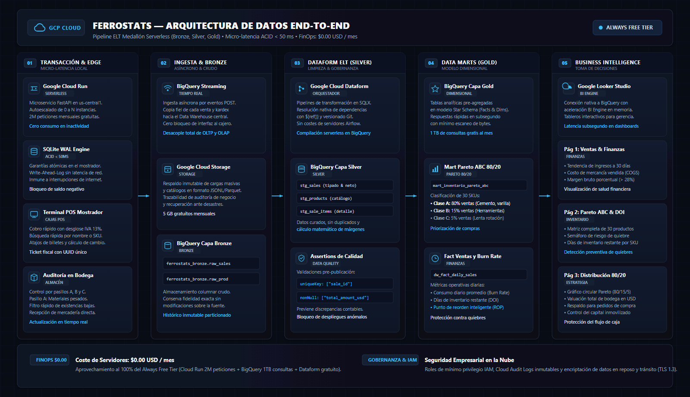
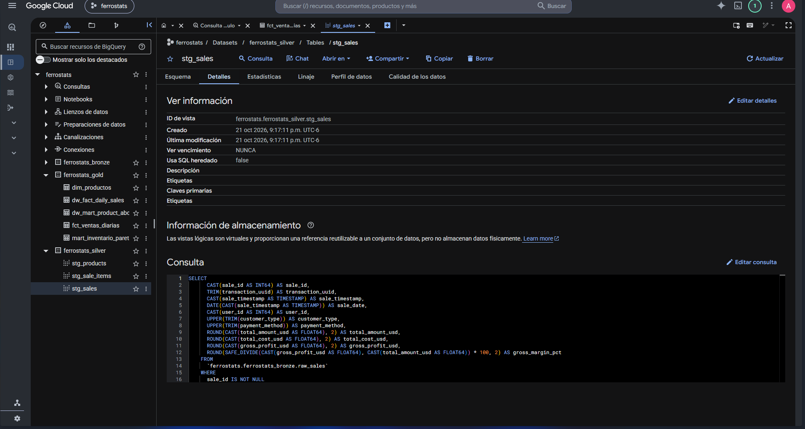
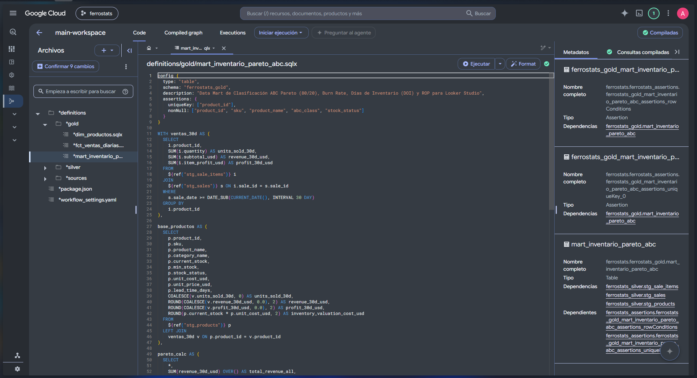

FERROSTATS
Plataforma Integral de Inteligencia de Negocios, Control de Existencias por Pasillos y Punto de Venta Atómico (ACID) para Ferreterías.
Tesis Central: Cómo la ingeniería de datos moderna en la nube y el rigor transaccional permiten que la micro y pequeña ferretería salvadoreña compita con cadenas transnacionales sin incurrir en costes fijos de software.
Del Problema Tradicional a la Solución FERROSTATS
Transformación de la micro y pequeña ferretería mediante tecnología transaccional y analítica en la nube.
El Dolor de la Ferretería Tradicional
- Quiebres de Stock Crítico: 3 de cada 10 clientes se marchan al no encontrar cemento, varilla o tubería. Si no halla lo básico, compra todo su presupuesto con la competencia.
- Capital Inmovilizado: Hasta un 25% del capital de trabajo queda atrapado en mercadería de lenta rotación («hueso»), provocando asfixia de liquidez.
- Márgenes Ciegos: Venta en mostrador sin desglose de costos ni cálculo automático de IVA (13%). Mermas no detectadas hasta inventarios semestrales.
Ecosistema Unificado FERROSTATS
- 1. Terminal POS ACID (< 50 ms): Cobro ágil en mostrador con salvaguardas preventivas contra sobreventas, atajos de billetes y ticket con desglose de IVA (13%).
- 2. Bodega por Pasillos (A, B, C): Organización física para el bodeguero, filtro rápido de existencias en riesgo de quiebre y recepción directa de mercadería.
- 3. Business Intelligence en Vivo: Conexión nativa a BigQuery para clasificación Pareto 80/20, Burn Rate diario y Días de Inventario Restante (DOI).
Pipeline de Datos End-to-End en GCP
Arquitectura Medallón serverless (Bronze, Silver, Gold), ELT con Dataform y coste operativo $0.00 USD.

Google BigQuery Data Warehouse
Almacenamiento analítico columnar con separación formal de capas Bronze, Silver y Gold.
-
Capa Bronze (Crudo): Dataset
ferrostats_bronzealmacena ventas y catálogos en su estado original sin transformaciones destructivas. -
Capa Silver (Curado): Dataset
ferrostats_silvercon deduplicación, tipado numérico estricto y cálculo de márgenes netos. -
Capa Gold (Dimensional): Tablas
mart_inventario_pareto_abcydw_fact_daily_salesen Star Schema para alimentar Looker Studio. - Eficiencia & Cuota: Consultas optimizadas con escaneo mínimo de bytes aprovechando el terabyte mensual gratuito de BigQuery.

Google Cloud Dataform & Data Quality
Orquestación declarativa en SQLX con control de versiones Git y validaciones automáticas pre-publicación.
-
Código SQLX Versionado: Definición modular de vistas y tablas incrementales con
dependencias declarativas
${ref()}. -
Aserción uniqueKey: Verificación estricta de que
sale_idno posea duplicados en ninguna fase del pipeline. -
Aserción nonNull: Bloqueo automático ante registros con montos o costos nulos
(
total_amount_usd). - Serverless Nativo: Sin necesidad de desplegar ni mantener infraestructura pesada de Apache Airflow.

Pase a Demostración en Vivo
Transición oficial a la plataforma en tiempo real desplegada en Google Cloud Run.
- Terminal POS Mostrador (ACID): Registro de venta con cálculo automático de IVA (13%), atajos de billetes y emisión de ticket digital.
- Control Físico de Bodega: Auditoría de existencias por pasillos A, B y C con actualización instantánea de stock.
- Tablero Looker Studio: Sincronización de analítica en tiempo real con BigQuery sin costo de servidores.